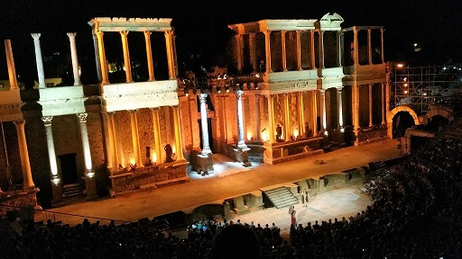
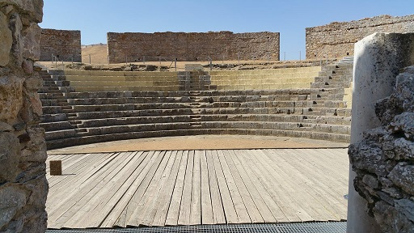
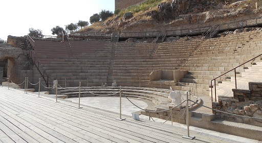
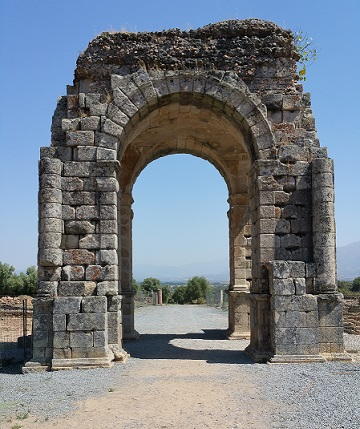
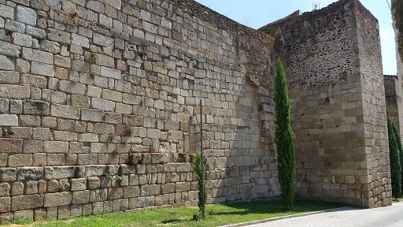

Al inicio del siglo II a.e.c., tropas y
colonos romanos procedentes de la provincia romana de la Bética llegarían a
las actuales tierras extremeñas.
- En Badajoz se han hallado algunos restos
cerámicos de época romana. De época visigoda, en el Cerro de la Muela, se han
hallados restos de edificaciones. En el termino municipal de Badajoz destaca
la villa romana de 'La Cocosa'. Habitada durante los siglos I y IV.
Posteriormente entre los siglos VI y VIII, se edifican mausoleos ocupando
los mismos espacios e incluso, a unos 200 metros de la villa, se erige una
iglesia de culto cristiano que cuenta con baptisterio.
- Mérida
fue fundada por Roma en el año 25 a.e.c por orden del
emperador Octavio Augusto para servir de retiro a los
soldados veteranos (eméritos) de las legiones X Gemina y
V Alaudae. Una de las ciudades más importantes de
Hispania, capital de la provincia romana de Lusitania.

Ver
Teatros romanos
-
Quintana de la
Serena.
- En
Zalamea de la Serena
se localiza el Dystilo mide 23,30 metros de altura, es un monumento funerario romano
único en España, declarado en 1931 Monumento Histórico. Imprescindible
es la visita al yacimiento protohistórico de Cancho Roano.
- En el término municipal de
Casas de Reina, se localiza el yacimiento arqueológico de Regina. A unos 1.500
metros de la población de Casas de Reina se hallan las ruinas de la antigua
ciudad romana de Regina, de las que destaca su teatro romano con capacidad para
1000 espectadores.

Ver
Teatros romanos
|
- En Alburquerque se
halla el puente romano-medieval de Guadarranque. Los orígenes históricos de la
Villa de Alburquerque se remontan a la Prehistoria, existiendo, en los
alrededores, ricos vestigios de población primitiva, pudiéndose encontrar
estelas funerarias, sepulturas antropomórficas, hachas, puntas de flechas,
dólmenes o "antas", litografías y pinturas rupestres.
El puente de Guadarranque está situado a unos 5 kilómetros de Alburquerque, en
el camino de la Zarza, que comunicaba la villa con Portugal y fue muy utilizado
durante la Edad Media para transportar la harina de los molinos que se
encontraban en el Gévora.
- La villa romana de La Majona, en Don Benito. Habitada
entre los siglos I y V.
- En Guareña se localiza el yacimiento tartésico de El
Turuñuelo, posiblemente uno de los yacimiento tartésicos más grandes y mejor
conservados.
- En Medina de las Torres destaca la
basílica de época romana. Contributa Iulia Vgultunia.
-
Alange
- Medellín. Fue fundada como campamento militar en el
año 79 a.e.c por el cónsul Quinto Cecilio Metello Pío, durante las guerras
peninsulares del 80-70 a.e.c. Del cónsul procede el nombre "Metellinum".
Destaca el teatro romano. También se aprecian restos de un puente
anterior al actual, de época barroca. Otro puente es el puente romano de Cagánchez. El puente está situado junto a una villa romana, sobre el arroyo del
mismo nombre, entre Medellín y Yelbes, a unos cuatro kilómetros de la villa.

Ver
Teatros romanos
- El oppidum de
Hornachuelos fue poblado entre mediados del siglo II a.e.c. y finales del
I. Era uno de las ciudades fortificadas de la Beturia.
Se puede visitar la necrópolis, los aljibes y el sistema
defensivo del lugar. Cuenta con Centro de Interpretación en la Casa de Cultura de Ribera del Fresno.
Hornachuelos se localiza en la provincia de Badajoz.
- El yacimiento de
Los Castillejos, fue poblado desde el Neolítico, Calcolítico y la plena
romanización. Destacan dos sectores visitables en el yacimiento. El primer
sector se sitúa a los pies del cerro, y el segundo sector se localiza en el alto
de la colina. Se halla en un excelente estado de conservación, con una trama
“protourbana” de finales de la Edad del Hierro. El elemento más llamativo del
poblado es la muralla, que sigue las curvas de nivel del terreno, adoptando una
forma casi pentagonal con superficie aproximada de 2’23 ha. Se localiza en el
término municipal de Fuente de Cantos en Badajoz. |
- Torremejia. Poblada desde el
Paleolítico inferior, de época romana destacan los restos de la Vía de la
Plata. Se cree que era una mansio. En el Palacio de los Mexía se
encuentran empotradas en el muro los restos de tres torsos de togados
romanos, esculpidos en mármol blanco y en buen estado de conservación.
También destaca el embalse romano de La Camasón, en las cercanías del
pueblo, en el Arroyo Tripero.
- El yacimiento arqueológico de la Villa Romana
'Torre Águila', situado en las inmediaciones de Barbaño. - En
Cáceres se aprecian los restos de murallas y algunas inscripciones
de la ciudad romana de Norba Caesariana. En julio de 2017
se abre al público los restos romanos del Palacio de Mayoralgo. El yacimiento
muestra la evolución histórica de la ciudad, desde su origen romano hasta la
actualidad. La confirmación que Cáceres tiene un origen como ciudad puramente
romano: la colonia Norba Caesarina, fundada entre los años 39 y el 19 a.e.c. - El campamento militar romano de
Cáceres el Viejo, con su aula arqueológica.
- Entre los municipios de Oliva de
Plasencia y Guijo de Granadilla de hallan los restos romanos de
la ciudad romana de Cáparra
y su centro de interpretación.

Ver
Arcos romanos
- La calzada romana de
Robledillo de
Gata.
- La villa
romana de Monroy es una de las villas romanas mejor conocidas de la Península. Se
asienta sobre dos colinas entre las que discurre un arroyo. En la entrada al
yacimiento, se localiza la zona residencial, termas, talleres, área de
servicio y dependencias relacionadas con la cocina. Siguiendo el recorrido
hacia la colina norte, después de pasar el arroyo, se aprecian los edificios
de carácter agrícola y ganadero. Monroy es un municipio de la provincia de
Cáceres.
-
Valencia de Alcántara.
|
- En
Alcántara se halla el puente romano construido sobre el río Tajo en el siglo II,
con 197 metros de longitud y 57 metros de altura en la pila central. El
puente tiene seis arcos de medio punto, midiendo los dos centrales 28,80m.
y 27,40 m. de luz, respectivamente. En el centro del puente hay un arco
conmemorativo con dos inscripciones que hacen referencia a Trajano.
- En Alconétar se conservan los restos del puente romano en la confluencia de
los ríos Almonte y Tajo. Llegó a tener 290 metros de longitud con 16 arcos,
estimándose se fecha de construcción a principios del siglo II, durante el Imperio de Trajano
o tal vez Adriano. |
- En
Baños de Montemayor se encuentran los
baños termales de origen romano.
- En Fregenal de la Sierra, se localiza la
ciudad céltico-romana de Nertobriga Concordia Iulia. Destacan sus templos y
ninfeo. - En
Coria
se conserva parte de la
muralla romana.

-
Talavera
la Vieja, Augustobriga.
- En enero de
2018 hallan restos arqueológicos en Tierra de Barros, junto a la carretera
que une Villafranca de los Barros y Fuente del Maestre, en la
carretera autonómica EX-360. Se han descubierto varios
silos, un complejo industrial de nueve hornos de
cerámica de época romana, así como diversos
enterramientos.
- En Cedillos,
en el Yacimiento de San Antonio, podemos visitar los
restos de la granja romana del Siglo II entre los que se
incluyen dos hórreos romanos, cuyo objetivo era
conservar las cosechas alejadas de la humedad y de los
roedores gracias a una estructura elevada.
También destaca necrópolis prerromana (con 32 tumbas) y
de un dolmen que ha sido datado con una antigüedad de
cerca de 4.000 años.
- En Monsterio
en octubre de 2022, localizan una cloaca, una panadería
y una calle porticada de la antigua Curiga. Mencionada
por Plinio el Viejo, en el siglo XIX en el cementerio,
se halló una incripción en latín: "Res publica
Curigensium". En la Plaza del Mercado, también se han
hallado restos y según arqueólogos e historiadores , en
la calle Templarios, estaría el foro romano. En la calle
Madre del agua, hay un acueducto. Lo último encontrado
está en el Paseo de Extremadura, la Vía de la Plata a su
paso por Curiga y tiene varios edificios.
- En Almaraz
destaca la villa romana de las siete colinas, data del
siglo IV. Se localiza en la finca privada Torrejón. Se
ha constatado la existencia de varios yacimientos y dos
necrópolis con más de 500 enterramientos y otros restos
como herramientas, monedas y mosaicos. Podría tratarse
de una de las más villas extensas halladas hasta
el momento.
|
MONUMENTOS ROMANOS
|